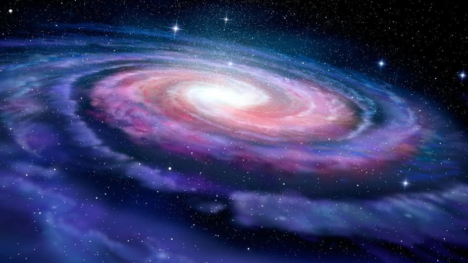

The galaxy is generally a huge collection of stars held together by the gravitional pull.The stars could coexist with dense amount
of dust and gases in particular galaxies.Galaxies were at first referred to as nebulae in the medieval period.The discoverly of galaxies came as a
result of optical, mechanical and photographic development.The Hubble Space Telescope is mainly held acountable for this advancement, this advanced the research in the cosmological field.The universe consists of many galaxies( About 100-200 BN!).
However, despite the great distance from one galaxy to the other one can still trace some with the unaided eye!
Milky-way, our galaxy, itself consists of over 250BN stars and the Sun is one of them.

The Milkyway
The galaxy is ofcourse seen when light from different stars clustered together create either patches or white-streaks as seen on the optics.
However, this is impossible to see with our bare eyes because galaxies are very far away from our own.It takes over 2.4 million light years to get to our neighbouring galaxy, Andromeda!
But with the right configuration, clustered stars of a similar galaxy can be seen at night.
2.How To View The Galaxies Without Aid From The Optics
1.Go away from the lights of the city.
2.Adapt your eyes to the dark
3.Use a star chart to determine where the galaxy will appear in the sky
5.Locate the constellation possesed by the galaxy eg. The particular constellation for Andromeda is Cassiopeia constellation
3.GALAXIES ELIGIBLE FOR THE 'GALAXY GAZING'
Intro
Because we do not have a telescope as a requirement tool, your eyes and focus are. As mentioned earlier only few galaxies can be visible
but, hey!, it's still a good place to start as a cosmos-fanatic.
So we have got three galaxies that can be traced through their conspicous constellations: